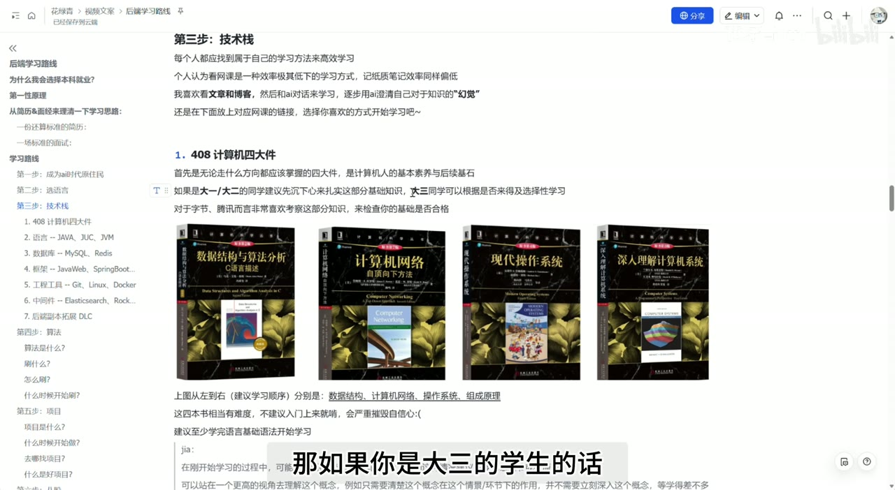

原视频 · 在线回看
点击后联网加载 B 站播放器；本地不下载整段视频。

原视频 · 在线回看
点击后联网加载 B 站播放器；本地不下载整段视频。
来源：带你从“第一性原理”速通大厂技术岗实习！ · 花绿青 ovo · 约 40 分钟 · 深度阅读
开始准备技术实习时，很容易遇到这样的困惑：语言还没学完，又发现要学数据库、框架、算法和计算机基础。每一项都能找到很长的课程，每门课又不断带出新的知识。于是，准备实习变成了一件没有明确终点的事。我们知道自己在学习，却说不清这些学习什么时候能够支持一次真实面试，也不知道哪些内容需要先掌握，哪些可以在项目里继续补。
花绿青给出的思路，是从求职过程中实际会发生的事情倒推准备顺序。简历需要呈现什么，面试怎样围绕经历追问，代码题和场景题分别需要哪些基础，再决定眼下应该投入哪里。这个视角能帮助安排有限的时间，同时也有适用边界：面试表现、真实能力和长期发展彼此相关，任何一项都无法完全代替另外两项。
这条路线来自一个具体处境。花绿青当时的成绩在保研边缘附近，对开发方向比较明确，也在考虑继续读研所需的时间。因此，他倾向提前准备本科就业，希望通过实践获得经验。这几个条件共同影响了选择：对目标岗位的兴趣、继续升学的不确定性、时间投入，以及自己愿意承担哪一种风险。
如果换一个人，目标是研究、某类对学历有明确要求的岗位，或者希望通过研究生阶段系统深入一个方向，结论可能不同。招聘要求也需要以具体岗位说明为准，不能把个人见过的几次招聘概括成某家公司永远只收某种学历。成绩在保研边缘，也不意味着已有学习完全没有价值；它只是在提醒我们，需要认真比较后续选择，而不宜默认所有人都应走同一条路。
花绿青看重互联网公司的实践机会、工作环境和人员交流，同时也提到强度、加班与稳定性方面的顾虑。我们可以把它们当成需要了解的工作条件。不同企业、团队和岗位的差异很大，薪资倍数、行业优劣和未来发展无法由一个实习经历确定。选择时保留具体条件，才能避免把对某个环境的个人感受，变成对整条职业道路的保证。
“第一性原理”在这里被用于强调一个简单起点：既然近期目标是获得实习，就要了解获得实习需要经过哪些环节。它更接近一种围绕目标安排准备的方式。花绿青观察的简历通常包含教育背景、实习、项目和技能；面试则可能从自我介绍开始，进入项目与基础知识，再到场景设计、算法和候选人反问。了解这些环节，可以让学习有更明确的对象。
例如，课程学过多少小时，很难直接说明你能解决什么问题；项目里处理过一次真实错误，就有机会继续讲当时的条件、排查和改动。不过，哪些内容能在面试里被看见，与哪些能力在工作里重要，并不完全重合。后面提到的 Git、部署和日志排查，可能不会每次被单独提问，实际协作时却仍然需要。这也说明，准备顺序可以围绕面试调整，能力建设不能只剩可背诵的答案。
这里还需要保留一个明确边界。花绿青对“项目包装”的部分表述很激进，认为只要能够回答细节，就足以让面试官相信项目做过。这类表达不能作为真实简历的做法。理解一个项目、复现过一个项目、独立完成某项改动，以及在团队里负责上线，是不同经历，应该分别说清。可以借助 AI 完成代码，也可以学习他人的设计，但没有做过的工作和没有得到的结果，不能写成自己的经历。
更值得保留的提醒，是机械抄完代码并不保证理解。跟着课程把文件逐个敲出来，面试时仍然可能说不清为什么用这个方案、极端情况下会出什么问题。把代码运行起来以后，还需要观察、修改和解释它。这样，“我完成过这个项目”才有具体内容支撑，也更容易承受后续追问。
学习路线的第一部分，是进入一个能够接触代码、文档和新信息的环境。GitHub 可以用来阅读项目、查实现和寻找资料；AI 编程工具可以帮助理解代码、尝试实现和排查错误；同伴交流、招聘信息和公开面试经验则能帮助了解岗位关注什么。这里不要求追逐所有新工具，重点是避免只沿着一门旧课程往下走，却始终不知道实际项目怎样组织、岗位在做什么。
花绿青把与 AI 对话编程和依靠规范文档编程放在一起讨论。前一种方式常被称为 Vibe Coding：通过自然语言不断说明想要的结果，让 AI 帮助生成和修改。后一种强调先写清需求、技术设计和限制，再据此实现。需求越含糊，人和模型越容易在某个细节上理解不同；文档能把重要条件留下来，后续也更方便检查实现是否满足条件。
不过，文档本身也可能遗漏需求，模型生成的代码也需要运行和测试。能够使用 AI，不代表通过面试以后就一定能胜任工作。真正的任务还包含理解业务、处理异常、协作和维护。工具可以降低某些实现成本，我们仍然要对自己采用的代码和结论作出判断。
信息渠道同样需要选择。招聘页面可以确认当前岗位条件，官方文档可以确认技术定义，别人的面试经历则提供观察角度。一个人遇到的题目不等于所有公司都会问，某个社区里的语言评价也不能直接决定自己的方向。持续接触信息的价值，在于让自己的计划能够根据真实条件调整。
花绿青主要比较 Java 和 Go，并以 Java 组织后面的路线。他自己的准备语言是 Java，进入实习后使用 Go，这说明某次岗位转换允许候选人继续学习另一门语言。它不能推出所有 Go 岗位都接受相同背景，或者 Java 岗位绝不接受其他语言经验。不同团队对现成经验和学习能力的要求仍然需要分别了解。
对初学者而言，更重要的是别被“某门语言已经不行了”这类笼统说法拖住。后端还有其他语言和实现方式，Java 与 Go 也各有适用场景。选择可以结合目标岗位、现有基础和可用学习材料，再把一门语言学到能够读懂程序、写出小功能、处理错误。此时已经能通过实践接触许多共同问题，以后学习另一门语言也更容易找到对应关系。
以 Java 为例，基础语法、对象和常用集合，是读写程序时不断会碰见的内容。JUC 指 Java 并发相关工具，帮助处理多个任务同时执行的问题；JVM 是运行 Java 字节码的虚拟机，与内存管理、程序运行等问题相关。花绿青建议先掌握基础，再在后续学习中逐步深入并发与虚拟机，避免一开始就陷在很深的内部实现里。
数据结构、计算机网络、操作系统和计算机组成，提供了理解程序运行的不同角度。数据结构帮助安排和访问数据；网络解释机器怎样通信；操作系统涉及进程、线程、内存和文件等资源；计算机组成进一步接近硬件执行。它们和项目并不分离，只是初学时还没有足够多的实际问题，把这些知识联系起来。
花绿青的建议是，时间充裕时认真建立基础，临近面试时再结合目标岗位安排重点；对于很难的教材，不要求刚入门就从头硬读。他还保留了一条学习经验：有些概念可以先知道在什么场景下起作用，继续接触后面的内容，等相关知识丰富以后再回来深入。这样，最初抽象的定义才可能和已经见过的程序联系起来。
这个办法也需要分清情况。一个暂时不影响继续理解的内部细节，可以先记录下来；如果连下一段代码在做什么都读不懂，或者当前错误正由这个概念引起，就需要先补上缺口。把不懂的地方标清楚，比假装已经理解更有用。继续向前与回头补课，可以在学习中交替进行。
接下来是数据库和框架。MySQL 用于组织、查询和维护关系数据，Redis 常用于快速访问键值及其他数据结构。将它们粗略记成“一个硬盘慢、一个内存快”，容易漏掉重要能力：关系数据库也会使用内存缓存，Redis 也提供持久化方式。更有用的问题是，当前存什么数据、怎样读写、需要怎样的一致性和恢复能力。Redis 的持久化文档 就说明了快照和日志等不同保存方式。
花绿青也谈到 PostgreSQL 与 AI 应用的结合。这里需要知道，常见的向量相似检索能力可以通过 pgvector 扩展 提供，需要相应安装或启用，不能认为任意 PostgreSQL 实例天然具有同样的向量功能。对求职准备来说，可以先把自己项目使用的数据库学清楚，再理解其他方案为什么适合某些需求，无需因一句流行度判断就反复换方向。
Java Web、Spring Boot 和 MyBatis-Plus 则出现在应用实现部分。Java Web 涉及接收请求和返回响应等服务端开发；Spring Boot 帮助组织和配置应用；MyBatis-Plus 帮助完成常见数据库访问。它们可以在项目中逐步学习，因为此时我们知道每个部件在对什么做操作。初期先能够使用，再根据实际问题深入原理，是一种顺序安排；它不代表相关原理永远不会影响工作或面试。
工程工具也需要实际操作。Git 记录代码变化，支持多人协作；Linux 是常见的服务器操作系统环境；Docker 把应用和所需运行环境组织成可分发的容器镜像，帮助减少部署差异。学会使用这些工具，不能只停在背命令。查看变更、处理冲突、查日志、启动服务和观察错误，都适合在自己的项目里反复练习。
再往后，Elasticsearch 对应搜索需求，RocketMQ、Kafka 和 RabbitMQ 对应不同的消息处理方案。消息队列可以让产生任务和处理任务的程序通过消息协作，但引入以后也有积压、失败和重复处理等问题需要理解。花绿青建议根据项目选一种深入，无需为了让简历显得丰富，把所有组件都加进来。
| 学习内容 | 在项目中主要帮助理解什么 |
|---|---|
| 语言基础、并发与运行环境 | 程序怎样表达逻辑，同时处理任务时会发生什么 |
| 数据结构、网络、操作系统和组成 | 数据、通信与计算资源怎样影响运行 |
| 数据库 | 数据怎样保存、查找、修改和恢复 |
| Web 与应用框架 | 请求怎样进入系统，业务代码怎样组织 |
| Git、Linux、Docker | 代码怎样协作修改，服务怎样部署和排查 |
| 搜索与消息组件 | 特定查询或任务处理需求怎样实现，会增加哪些维护问题 |
算法面试通常要求把问题转成可执行的步骤，再写出代码。核心代码模式会给定函数或部分框架，候选人补充主要逻辑；ACM 模式还需要自己处理输入输出和完整程序。这两种练习方式涉及的周边工作不同，准备时需要知道目标面试采用哪种形式。掌握所用语言的基本读写之后，就可以开始相应练习，无需等数据库和框架全部学完。
花绿青按剩余时间给出两种安排。时间比较充足，就按题型学习，从代表性问题开始，比较相近题目改变了哪些条件；已经临近面试，就优先复习常见问题和自己容易出错的部分。常见题单可以帮助组织范围，但它不保证覆盖某个固定比例的真实面试。遇到难题也不能直接推断面试官有意拒绝，考核内容和评价方式还可能受岗位等因素影响。
他的“三遍刷题法”重点在于逐步减少对题解的依赖。第一遍先尝试思考，没有思路时阅读自己能理解的解答，建立对方法的认识；第二遍回到题目，尝试搭出主要框架，检查遗忘的细节；第三遍独立完成，并留意边界和容易写错的位置。之后仍然需要间隔复习，不能因为某次看懂或写对，就认为以后一定能独立解决。
这里值得检查的是每遍之间的变化。第一遍知道解法长什么样，第二遍能够解释主要步骤，第三遍在不看答案时把它写出来。假如三遍都只是照着同一份代码抄写，练习并没有完成这种变化。反过来，也无需规定自己必须在三分钟后看题解，或一天完成固定数量；题目难度、基础和可用时间不同，节奏可以调整。能够说明解法为什么适用，以及条件改变后哪里需要改，比单纯追求题数更容易暴露理解缺口。
语言、数据库和基本工程工具有了一些基础以后，就可以开始完整的小项目，在过程中继续学框架和相关组件。花绿青更倾向这种边学边做的方式，因为眼前有一个实际任务，学习时比较容易知道要解决什么。也有人需要先系统看过一部分内容再动手，两种方式都可以根据自己的理解情况调整。
项目有完整目标，能够实际运行，有文档和测试，也有需要作出选择的地方。完成这些本身已经有学习价值；面试里若想进一步说明能力，可以挑一个真实困难，讲清它怎样被处理。花绿青反对把技术名称全部堆进项目，强调每引入一个组件，都要能说明必要性。简单系统同样可能包含有价值的取舍，规模大也不自动意味着设计合理。
例如，讨论一项优化时，需要有优化前的具体情况：什么操作慢，在什么数据和请求条件下观察到，为什么考虑某种改法。改完以后，也要在可比较的条件下观察结果。否则，“优化了性能”只剩一个结论，听者很难判断工作内容。没有真实测试数据，就说明目前只完成了设计或功能验证，不必替项目补上漂亮指标。
花绿青建议准备传统后端与 AI Agent 两类项目，以展示不同方面的实践。这是他的组合思路，数量和题材都不构成录用要求。教程项目可以帮助入门，继续做出自己理解并验证过的改动，才能形成个人经历。一个项目是否值得展示，也应看实际工作和岗位关联，不能只由“外卖”“点评”或“图书管理”等名称判断。
项目结束时，还可以把反复遇到的处理方法记录下来，形成之后能继续使用的文档或 Skill。这个动作帮助保留经验，但可复用说明同样需要基于实际有效的做法。暂时只在一个场景里成功，就把适用范围写清楚，后续遇到新条件再继续调整。
常说的“八股”，通常指面试中反复出现的基础技术问题。它们容易被整理成固定答案，但很多问题实际上对应程序会遇到的真实情况。理解并发、数据库和网络以后，再将重要概念整理成清楚表达，能帮助面试时迅速说明重点。只有背诵却没有使用情境，一旦问题换个条件，就容易无法继续回答。
花绿青提出临近面试时集中复习，也提到直接从高频问答进入学习的激进方式。后一种方法可以暴露常见问题，但容易留下知识之间的空缺。用现成材料节省整理时间是可行的，仍需要检查自己是否真的理解，以及材料是否准确。AI 可以帮助提问和讨论，也会给出错误解释，关键结论最好回到文档、代码或实际运行结果确认。
每次练习或面试以后，记录没有答清的问题，会让后续准备更有方向。记录不必重新抄一整本题库，可以留下自己的具体困惑：哪个条件没注意，哪种概念混在一起，项目中对应哪一段实现。这样，下一轮学习就知道从哪里继续，也比较容易看见理解确实发生了变化。
这条路线把求职准备分成相互连接的几件事：用岗位和面试了解近期目标，用语言与基础知识理解程序，用项目获得真实经历，算法单独保持练习，再把已有理解整理成能够回答追问的表达。AI 可以参与其中，但经历的真实性和结果的检查仍由自己负责。
为什么抄完项目代码，仍然可能回答不了项目问题？为什么能够顺畅解释一个方案，也不等于已经实施过它？同时守住理解与实践这两点，学习安排才会真正积累成自己的能力。